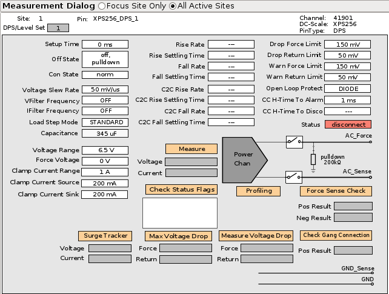

XPS256 in DPS operating mode
In DPS operating mode, an XPS256 channel behaves like a legacy DPS-slot device power supply and is used to supply devices with power during the execution of a testflow.
An XPS256 channel is configured to operate in DPS operating mode if it is defined as a device power supply using the DPS Pins editor.
Characteristics
The channel is typically used for DPS applications to supply the DUT. The channel provides a positive or negative voltage up to the programmed clamp current and is programmed using DPS primary sets. Programming an XPS256 channel by DC events is also supported.
Hardware view of XPS256 in DPS operating mode:

Connection state
The connection state defines the behavior of the channel in the DPS operating mode. The following connection states are supported:
- norm
- ungang
- himp
Refer to the XPS256 programming - DPS operating mode for the information how to set the connection state.
Connecting and disconnecting channels in DPS operating mode
An XPS256 channel behaves like a DPS-slot device power supply when connecting and disconnecting channels in DPS operating mode.
When connected, the channel forces the programmed voltage. The current is limited to the programmed clamp current.
Unlike other DC Scale cards in DPS operating mode, an XPS256 channel in DPS operating mode needs not to be disconnected for changing the force voltage range or the force current range. XPS256 supports changing the force voltage range and the force current range in connected state both for the DPS operating mode and for the PMU operating mode.
Functional changes
- Introduced in SmarTest 7.10.1